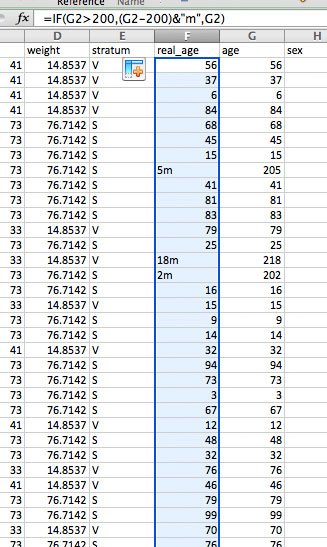
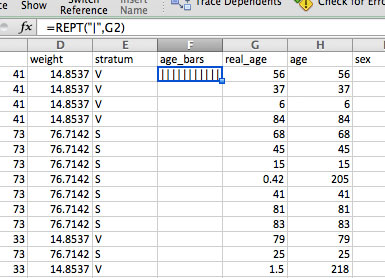
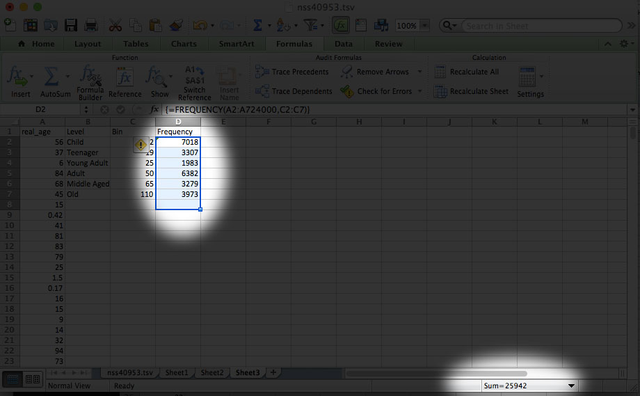
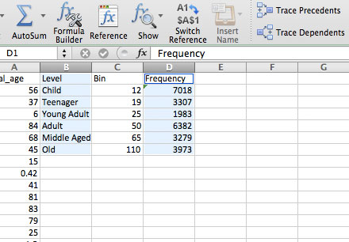

Let's Do Some Math
We're going to be doing more work in Excel on a big dataset of injuries. We'll cover neat tricks like VLOOKUP and excel formulas, as well as some math basics like averages and percent change. Let's get started!
Go to this website, the US Consumer Product Safety Commission. There is a ton of stuff here, including recalled products, violations and standards, and injury statistics and data.
We want to get some real data, so go to Research & Statistics > NEISS Injury Data
Ok, the NEISS is pretty amazing. It's a database of emergency room visits involving an "injury associated with consumer products." It's not every single visit, but it's a big enough sample to tell us about how Americans injure themselves. So let's explore! Scroll down and click on the orange "Query NEISS" button.
Now, fun trick: the Empty Search. For lots of online databases, especially on government sites, if you leave all the fields blank and then hit "Search," you'll get back the ENTIRE database as results. This doesn't always work, but often worth a try. Let's try it now. Don't type anything in, just click "Submit Query."
Now look in the top right to see how many records were returned. It should say 376,926 records:
Ok, that's a lot of records, so let's go back and put in a date range. Let's just look at the last month of 2013, so from 12/01/2013 to 12/31/2013. Hit "Submit Query" again. You should return 25,942 records. Click on "Generate Download File."
After some processing, you should get to a new page with "Download" button. Click that, and it should automatically start downloading a .tsv file (TSV stands for Tab-separated values, like a CSV only with tabs rather than commas).
Drag that .tsv file into Excel (mine is called nss40953.tsv), and Excel should parse it automatically.
Now the first thing we want to do is make sure our rows match. Scroll down to the bottom. How many rows are there? There should be 25,943 (our 25,942 records plus the header row).
Now let's try to make sense of this data. What are we looking at? First let's look at the "body_part" column. What do these numbers mean??
Well, each number must correspond to a different body part, but I don't know what each number means. How do I solve this? Hint: it may involve going back to the source of your data!
As you might have guessed, we need a data dictionary, or in this case the coding manual to tell us what these numbers mean. Here's what we find if we open up the coding manual:
Typically extracting data out of PDF's is a nightmare, and these codes are missing a few values, so I've generated a CSV file for you. Download that file here, and copy and paste the body part key into a new sheet in your Excel file.
EXCEL FORMULA 1: VLOOKUP
Now, we have our key, but we need to match them to our original dataset. We're going to use something called a VLOOKUP to do that. Back on your original data (which should be the first tab in your Excel file) add a new column next to the "body_part" column. Call it "named_body_part". (Hint: Select the body_part column, then go to Insert > Columns)
Now inside the first cell in the "named_body_part" column, start typing "=VLOOKUP(". The VLOOKUP formula should appear. Let's break down the parts of the formula.
If you click on the blue link, you should get to the formula builder. This breaks down what each section means in VLOOKUP (lookup_value,table_array,col_index_num, range_lookup ):
In this case, the lookup_value is the body part code in the body_part column, so click on M2, then add a comma.
The table_array is the key, so select all the data in Sheet1, then add another comma.
The col_index_num is the column of our key that has the names we want to match on, so type in 2. Then range_lookup is whether we want approximate or exact matches, and we want exact matches, so type FALSE.
Did it work? Your formula should look like this: =VLOOKUP(M2,Sheet1!A1:B27,2,FALSE) and the first cell of the named_body_part column should be "Trunk, lower."

Now let's apply the formula to more cells. Drag down the little rectangle in the bottom right of the cell about 20 rows.
Oh no! What happened. Well, look closely at the formula in row 10. It should say: =VLOOKUP(M11,Sheet1!A10:B36,2,FALSE)
Look what's happened to the table_array, A10:B36. It's starting at A10 rather than A1, because for each row it goes up sequentially. We want it to ALWAYS look in A1:B27, so we need to make this an absolute range, not a relative one. You do this in Excel by typing and extra "$" sign in front of the row number, like: A$1:B$27
Now if we double click the little rectangle, we should get no more #N/A's and fill in the entire column.
Now we've seen what VLOOKUP can do, see if you can do the exact same thing only with Diagnosis codes (the column called "diag"). Download the key to diagnosis codes here.
When you're done, you should end up with something like this:
EXCEL FORMULA 2: IF Statments
Now we're going to tackle this "age" column. What's wrong with it?
Well, unless we have managed to find the oldest human beings on earth, there is no way these ages are all in years. Time to go back to the coding manual to see if we can figure this out.
Aha. So looks like those 200 + values are for babies under 2 years old! How to solve this? Well, we can write an IF statement to change them all. First, let's add a new column, and call it "real_age".
Let's say we want to convert them to months. Start typing =IF(, and the formula for IF statements should pop up. Click on the blue link to see how this formula works:
So if our formula is IF(logical_test,value_if_true,value_if_false), the logical test is whether the value is greater than 200, the value_if_true is that value minus 200, and the value_if_false is the original value. So we've got: =IF(G2>200,(G2-200)&"m",G2)
In this case we've added an "m" to indicate months. But this seems hard to compare to the other values, which are in years. Let's convert them all to years (as a decimal) by dividing by 12. Use: =IF(G2>200,(G2-200)/12,G2)
EXCEL FORMULA 3: ROUND
Say we wanted to round to the closest year. We could use the ROUND function, like so: =IF(G2>200,ROUND((G2-200)/12,0),G2)
I don't really like having the age as "0", so let's change it back to a decimal, by using the ROUND function but change the 0 (which represents the number of decimal places) with 2. =IF(G2>200,ROUND((G2-200)/12,2),G2)

EXCEL FORMULA 4: REPEAT
Now for a fun visual formula. Let's visualize the ages, right in Excel! Make a new column, call it "age_bars".
Type into the first cell: =REPT("|",G2)
This repeats the symbol "|" for as many times as the value in G2. Since 52 is a lot of bars, let's divide that by 10. =REPT("|",G2/10) Double click on the rectangle to repeat the formula down the entire column.
Cool! Now we're going to do some more calculations on our age column. What's the average age of people who are injured? (Remember that our data only covers injuries caused by products serious enough to make people go to the emergency room in the month of December 2013, but still.)
EXCEL FORMULA 5, 6 & 7: AVERAGE, MEDIAN, MODE
Let's talk about averages. Specifically, the difference between the mean, median and mode.
Ok, now that we've covered that, let's apply it to our ages. Add a new column and call it "age_averages." In the first cell, type in: =AVERAGE( and then click on the entire age column and hit return. You should end up with =AVERAGE(H:H)
Now do the same for the =MEDIAN() and the =MODE()
They are pretty different, right?? Which would you choose for this case?
EXCEL FORMULA 8: FREQUENCY
Let's say I wanted to find out what age group gets injured the most (again, with the Dec 2013 caveats). Let's make a histogram.
Just so I can keep things organized, let's copy the "real_age" column into a new sheet. Because it has formula's in it, instead of regular Paste, you need to do Edit > Paste Special, and then select "Values"
Now we have all our ages on their own sheet.
We're going to creat 3 more columns, titled Level, Bin and Frequency.
Now I'm going to add the "levels" and "bins" I want to sort these ages into. Let's make categories for Infants, Children, Adults, etc, and the cutoff age for those categories, like so:
Now for my Frequency column, I want Excel to count up all the ages that fall into those categories (or Bins). I do this by using =FREQUENCY(). Here's what's involved in that formula:
So I've got FREQUENCY(data_array,bins_array). My data_array is the entire age column, from A2:A25943. My bins_array is the Bin column, from C2:C7.
To apply this to the Frequency column, I'm going to select row 2 to 7 in my Frequency column:
Then I'm going to type in =FREQUENCY(A2:A724000,C2:C7), and holding down COMMAND, hit Return.
If your numbers don't match or are too large, try again and make sure to hold down Command.
Now to make sure these all add up, select all the values in the Frequency column. Look to the very bottom of your Excel file, and you should see the SUM automaticall show up. Make sure this is the same as the number of records we started with, 25,943.
Now let's chart this! Select the "Level" column, and, holding down Command, select the Frequency column.
Go to Insert > Chart, select the Clustered Column chart, and... you should end up with this!
So, what age group gets injured the most? How is that affected if you change the Bin groupings (say, make "Child" end at 7 instead of 12).
ONE LAST FORMULA: PERCENT CHANGE
We're going to do one final calculation, to see how injuries changed from 2012 to 2013. According to NEISS, the national injury estimate in 2012 was 14,614,128, while in 2013 it was 14,033,745. So we know the number of injuries went slightly down, but by how much? That's what we'll find out.
Let's make a new sheet and put in these numbers.

To calculate the percent change, we're going to use this very simple formula:
NEW minus OLD over OLD
Here it is another way:
(NEW - OLD)/OLD
Let's try it! Here are our values:
NEW 14,033,745
OLD 14,614,128
You should get a very small negative number. Now keep in mind that to get percentage, we have to multiply by 100 or just change our column into a percentage. Let's change our column.

And you should get -3.97%.
That's all there is to percent change. What other aspects of this data could you calculate percent change for?